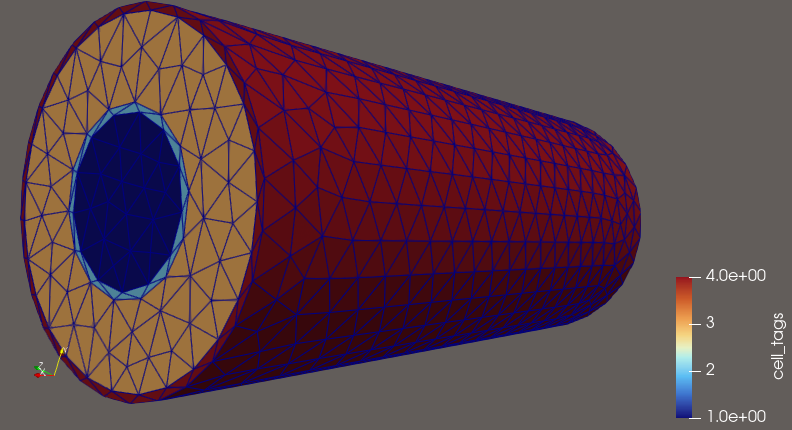

Digital Twin of a Double-Pipe Heat Exchanger PBR for the Sabatier Reaction
CFD-based Multiphysics Simulation with FEniCSx
Motivation
- CO\(_2\) utilization: converting captured CO\(_2\) into synthetic fuel
- Sabatier reaction — core of Power-to-Gas (P2G) technology
- Store surplus renewable electricity as CH\(_4\) via H\(_2\)
- Also used in ISS life support / proposed for Mars ISRU (in-situ propellant)
- Strongly exothermic reaction in a packed bed → thermal management determines conversion, catalyst life, and safety
- Goal: a digital twin of an integrated heat-exchanger reactor to explore operating conditions by simulation instead of experiment
The Sabatier Reaction
\[\mathrm{CO_2 + 4H_2 \;\rightarrow\; CH_4 + 2H_2O}
\qquad \Delta H = -165\ \mathrm{kJ/mol}\]
- Discovered by Paul Sabatier (Nobel Prize in Chemistry, 1912)
- Thermodynamics: exothermic, equilibrium favors low temperature
- Kinetics: negligible without catalyst; requires elevated temperature (Ni or Ru catalysts, typically 250–400 °C)
- → Intrinsic trade-off: heat must be supplied to ignite the bed, then removed to protect equilibrium and catalyst
- This coupling of reaction and heat transfer is exactly what a heat-exchanger reactor — and its digital twin — must capture
Why CO\(_2\) → CH\(_4\)? (1) Carbon Utilization
- Carbon neutrality requires more than capture and storage (CCS): utilization (CCU) turns CO\(_2\) from waste into feedstock
- Among CO\(_2\) conversion routes, methanation is uniquely practical:
- CH\(_4\) is a drop-in fuel — existing natural-gas grid, storage, LNG infrastructure can be used without modification
- Single-step reaction, mature Ni catalysts, high selectivity
- Contrast: methanol / Fischer–Tropsch routes need multi-step processes and new distribution infrastructure
Why CO\(_2\) → CH\(_4\)? (2) Power-to-Gas
- Renewable electricity is intermittent → surplus power is curtailed
- Power-to-Gas (P2G) chain: \[\text{surplus electricity}
\;\xrightarrow{\text{electrolysis}}\; \mathrm{H_2}
\;\xrightarrow{\text{Sabatier}}\; \mathrm{CH_4}\]
- H\(_2\) itself is hard to store and transport (low volumetric density, embrittlement, no grid)
- Methanation converts H\(_2\) into a grid-compatible chemical battery — seasonal-scale energy storage
- Industrial demonstration: Audi e-gas plant (Werlte, 6 MW) and multiple EU P2G pilot projects
Why CO\(_2\) → CH\(_4\)? (3) Space Applications
- ISS life support: Sabatier unit (operational since 2010) recovers water from metabolic CO\(_2\): CO\(_2\) + H\(_2\) (from electrolysis) → CH\(_4\) + H\(_2\)O → closes the O\(_2\) loop
- Mars ISRU: Martian atmosphere is 95% CO\(_2\)
- Sabatier + electrolysis produces methane/oxygen propellant on-site
- Baseline of SpaceX Starship Mars architecture (methalox Raptor engines)
- Return propellant made on Mars → mission mass reduced dramatically
- Same reactor physics, extreme reliability requirements → strong case for simulation-driven design
The Core Engineering Problem: Heat
- Strongly exothermic: adiabatic operation would raise the bed temperature by hundreds of kelvin
- Consequences of poor heat management:
- Equilibrium penalty: conversion drops as T rises (near-complete below ~300 °C, degraded above ~450 °C; reverse water-gas shift produces CO)
- Hot spots → thermal runaway in packed beds
- Catalyst sintering and permanent deactivation
- But too cold → kinetics die, reaction extinguishes
- ⇒ Reactor performance is decided not by chemistry alone, but by the coupled heat-transfer design — hence the HX-integrated PBR
Why a Digital Twin?
- Experiments on this system are expensive and hazardous: high-pressure H\(_2\), 1000 K streams, runaway risk
- Design space is large: geometry, flow rates, inlet temperatures, catalyst packing — impossible to scan experimentally
- A validated 3D multiphysics model enables:
- virtual prototyping and scale-up before any hardware
- locating hot spots / dead zones invisible to point sensors
- operating-map generation for control strategies
- Open-source stack (FEniCSx) → no license cost, fully reproducible, extensible to model-based control later
System Concept: Double-Pipe HX + PBR
- Inner pipe: packed-bed reactor (PBR)
- CO\(_2\)/H\(_2\) mixture, approximated with H\(_2\) properties (mixture property data unavailable)
- Outer annulus: hot air at 1000 K, counter-current flow
- preheats the bed to reaction temperature
- Steel walls: conjugate heat transfer between the two streams

Modeling Framework
Three coupled balance equations, solved in 3D:
- §1 Momentum balance — annulus flow (Navier–Stokes) and packed-bed flow (Darcy–Forchheimer)
- §2 Energy balance — single temperature field over fluid + solid domains, with reaction heat source
- §3 Mass balance — transport of 4 species (CO\(_2\), H\(_2\), CH\(_4\), H\(_2\)O) with Arrhenius kinetics
Implemented in open-source FEniCSx (FEM) with GMSH meshing
§1.1 Momentum — Outer Annulus
Incompressible Navier–Stokes (gravity neglected):
\[\rho \frac{\partial \mathbf{u}}{\partial t}
+ \rho (\mathbf{u}\cdot\nabla)\mathbf{u}
= -\nabla P + \mu \nabla^2 \mathbf{u},
\qquad \nabla\cdot\mathbf{u}=0\]
Semi-implicit time discretization (Crank–Nicolson diffusion, Adams–Bashforth convection):
\[\rho\!\left(\frac{u^{*}-u^{n}}{\Delta t}
+\Big(\tfrac{3}{2}u^{n}-\tfrac{1}{2}u^{n-1}\Big)\cdot
\tfrac{1}{2}\nabla(u^{*}+u^{n})\right)
-\tfrac{1}{2}\mu\nabla^{2}(u^{*}+u^{n})
+\nabla P^{n-\frac{1}{2}}=0\]
Solved with a pressure-correction (IPCS) scheme: tentative velocity → pressure Poisson → velocity update
§1.2 Momentum — Packed Bed
Flow through the catalyst bed: Darcy–Forchheimer law
\[-\nabla P = \frac{\mu}{\kappa}\,\mathbf{u}
+ \rho\,\beta\,|\mathbf{u}|\,\mathbf{u}\]
Coefficients from the Ergun equation (particle diameter \(d_p\), porosity \(\phi\)):
\[\kappa = \frac{\phi^{3} d_p^{2}}{150\,(1-\phi)^{2}},
\qquad
\beta = \frac{1.75\,(1-\phi)}{\phi^{3}\, d_p}\]
- Linear (Darcy) term: viscous loss; quadratic (Forchheimer) term: inertial loss
- Nonlinear in \(|\mathbf{u}|\) → solved by Picard iteration
§2 Energy Balance
Single temperature field across all four subdomains (inner fluid, inner wall, outer fluid, outer wall):
\[\rho c_p\!\left(\frac{\partial T}{\partial t}
+ \mathbf{u}\cdot\nabla T\right)
= \nabla\cdot(k\,\nabla T) + S\]
Reaction heat source in the packed bed:
\[S = (-\Delta H_{rxn})\, r \;>\; 0 \quad \text{(exothermic)}\]
- Continuous FEM space → fluid–solid interface coupling is automatic (conjugate heat transfer without explicit interface conditions)
- Material properties assigned per subdomain
§3 Mass Balance
Convection–diffusion–reaction for each species \(i\) (CO\(_2\), H\(_2\), CH\(_4\), H\(_2\)O) in the packed bed:
\[\frac{\partial C_i}{\partial t}
+ \mathbf{u}\cdot\nabla C_i
= D_i \nabla^{2} C_i + \nu_i\, r\]
Stoichiometry: \(\nu = (-1,\,-4,\,+1,\,+2)\)
Power-law kinetics with Arrhenius temperature dependence:
\[r = A\,e^{-E_a/RT}\; C_{\mathrm{H_2}}^{0.88}\; C_{\mathrm{CO_2}}^{0.34}\]
Reactor performance metric — CO\(_2\) conversion:
\[X_{\mathrm{CO_2}} = \frac{C_{\mathrm{CO_2},in}-C_{\mathrm{CO_2},out}}{C_{\mathrm{CO_2},in}}\]
Coupling Structure
Each time step:
- Solve annulus flow (IPCS) and bed flow (Darcy–Forchheimer)
- Transport 4 species with reaction rate \(r(T, C)\)
- Solve energy equation with reaction heat \((-\Delta H)\,r\)
- Updated \(T\) feeds back into the Arrhenius rate
→ Two-way coupling between flow – heat – reaction: the physics a lumped (0D/1D) model cannot resolve, and the reason for a full 3D digital twin
Expected Outcomes
- Start-up transient: how the hot stream ignites the bed
- Steady-state temperature and concentration fields
- CO\(_2\) conversion vs. operating conditions (inlet velocity, hot-air temperature, geometry)
- Identification of hot spots / cold zones in the bed
- A reusable open-source simulation framework (FEniCSx + GMSH + PETSc, fully scriptable)
Summary
- Sabatier reaction: exothermic CO\(_2\)-to-CH\(_4\) conversion whose performance is governed by heat management
- Proposed topic: digital twin of a double-pipe heat-exchanger PBR
- Formulated as three coupled 3D balance equations — momentum (NS + Darcy–Forchheimer), energy (conjugate + reaction heat), mass (4 species + Arrhenius kinetics)
- Implementation and preliminary results: in progress
Thank you